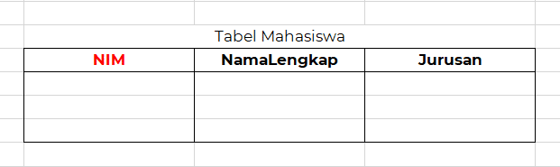
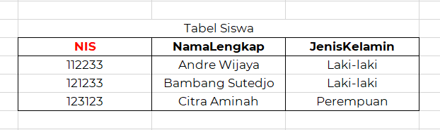
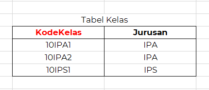
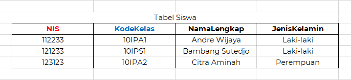

Key dapat dipahami sebagai tanda pengenal untuk mengidentifikasi sebuah baris di dalam tabel. Artinya, masing-masing baris data pasti dan harus memiliki tanda pengenal-nya sendiri. Key dapat diibaratkan seperti Nomor Induk Kependudukan (NIK) untuk masyarakat Indonesia atau Nomor Induk Mahasiswa (NIM) untuk para mahasiswa.
Selain berperan sebagai tanda pengenal, jenis key dalam database juga berperan sebagai penghubung antara satu tabel dengan tabel lainnya. Seperti yang sudah kita bahas di awal tadi, penting bagi tabel-tabel dalam suatu relational database untuk saling terhubung antara satu dengan yang lainnya. Untuk bisa menghubungkan tabel-tabel dalam suatu relational database, kita perlu menggunakan jenis key dalam database kita. Oleh karena itu, fungsi key yang kedua ini juga tidak kalah penting nih dengan fungsinya sebagai tanda pengenal!
Jenis Key dalam database yang sebenarnya adalah atribut biasa yang dimana ditambahkan deklarasi query tertentu yang mana untuk dijadikan sebagai dari key pada tabel tersebut. Akan tetapi, sama dengan halnya yang ada di NIK dan juga NIM, atribut yang dijadikan juga harus bersifat unik yang dimana artinya antara data satu dan juga data lainnya tidak boleh harus sama. Selain dari itu juga bahwa atribut yang akan dijadikan sebuah key wajib diisi dan tidak diperbolehkan kosong.
Berikut ini adalah jenis jenis key:

Primary key adalah suatu nilai yang ada didalam suatu basis data yang dimana digunakan untuk mengidentifikasi suatu baris yang ada di dalam tabel. Nilai yang ada didalam primary key adalah unik. Sedangkan secara sederhananya primary key dapat juga diartikan sebagai kolom yang berisi nilai unik, yang dimana memiliki fungsi sebagai identitas yang untuk membedakan setiap record yang ada didalam suatu tabel.
Primary Key merupakan tanda pengenal yang ditetapkan untuk suatu tabel. Primary Key ini harus merupakan atribut yang paling cocok dan paling dapat membedakan data-data yang ada di dalam tabel tersebut. Misalnya, setiap mahasiswa pasti memiliki NIM dan nomor ponsel. Kedua atribut ini pasti merupakan data yang unik, kan? Tidak ada dua mahasiswa yang memiliki NIM dan nomor ponsel yang sama persis. Akan tetapi, mana atribut yang paling cocok untuk menjadi tanda pengenal dari mahasiswa? Yup, NIM pastinya lebih cocok untuk dijadikan tanda pengenal si mahasiswa!
Jenis key dalam database selanjutnya adalah Foreign Key. Apabila primary key berfungsi untuk menjalankan fungsi pertama dari key dalam database, yakni sebagai tanda pengenal, maka foreign key berfungsi untuk menjalankan fungsi kedua dari key dalam database, yakni sebagai penghubung antartabel.
Sebelum mempelajari penggunaan foreign key, mari kita simak kedua tabel di bawah ini:


Dari kedua tabel di atas, kita dapat melihat bahwa ada siswa dan ada kelas dalam suatu sekolah. Akan tetapi, kita tidak bisa melihat siswa mana masuk di kelas mana. Untuk memperjelas tabel di atas, kita dapat mengetahui jenis key dalam database menghubungkan kedua tabel dengan menggunakan foreign key.
Dari tabel di atas, dapat kita ketahui bahwa primary key dari tabel siswa adalah NIS atau Nomor Induk Siswa. Sementara, primary key dari tabel kelas adalah Kode Kelas. Untuk menghubungkan kedua tabel di atas, kita cukup menambahkan Kode Kelas sebagai foreign key pada Tabel Siswa. Dengan begitu, tampilan tabel siswa secara keseluruhan akan seperti di bawah ini:

Secara sederhana foreign key ini dapat diartikan sebagai kunci asing. Yang dimana definisi ini juga berlaku didalam pengolahan relasional database. Kunci asing (foreign key) adalah sebuah atribut yang terdapat didalam suatu tabel yang dimana untuk digunakan untuk menciptakan hubungan antara dua tabel.
Fungsi dari forign key adalah foreign key digunakan untuk menandakan hubungan tabel yang satu dengan yang lainnya. Yang dimana istilah ini dikenal sebagai parent dan child. Suatu tabel dapat dikatakan sebagai child apabila didalam suatu tabel terdapat kolom yang merupakan rujukan terhadap tabel pertama atau parent. Selain itu juga foreign key ini memiliki fungsi:
Jenis key dalam database selanjutnya adalah Candidate key ini berperan sebagai untuk mengidentifikasi adanya kejadian yang spesial pada tabel anda. pada candidate key ini juga memiliki syarat sebuah kunci yang dinamakan candidate key adalah unik identifier, serta juga candidate key ini non duplikat. Yang dimana maksudnya tidak ada kunci yang memiliki ciri khas yang sama dengan candidate key.